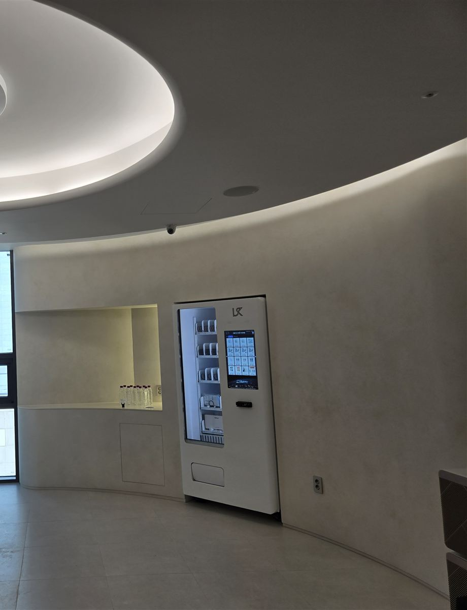

강릉 무인자판기 설치 완료 — 치과 대기실 벽면 매립형 구강용품 자판기

치과 진료가 끝나면 환자분들이 접수대에서 자주 묻는 말이 있습니다. "여기 치간칫솔 파나요?" 팔면 좋은데, 접수 직원이 수납하다 말고 선반에서 물건을 꺼내고 따로 계산까지 하려면 그때마다 줄이 밀립니다. 사진은 그 판매를 대기실 벽면의 자판기 한 대에 맡긴 현장입니다. 정수 코너 바로 옆, 벽을 기계 크기만큼 안쪽으로 들인 자리에 흰색 자판기를 맞춰 넣어 대기 공간은 한 뼘도 줄지 않았습니다.
어떻게 구성했나
병원 대기실에 자판기를 들일 때 가장 먼저 보는 건 "눈에 띄되 거슬리지 않는 자리"입니다. 접수대 정면에 두면 대기 중인 분들 시선이 계속 기계로 가고, 너무 구석에 두면 있는 줄도 모릅니다. 이 현장은 환자분들이 물을 마시러 자연스럽게 들르는 정수 코너 옆을 골랐습니다. 물 한 잔 뜨다가 화면이 보이고, 진료 때 들은 관리 방법이 생각나 바로 사 가는 흐름입니다.
칸 구성은 칫솔·치간칫솔·치실·치약처럼 진료 뒤 바로 찾는 구강용품 위주로 짰습니다. 같은 칫솔도 굵기·크기별로 칸을 나눠 두면 환자분이 진료실에서 들은 사이즈를 그대로 골라 갈 수 있습니다. 기계 색은 벽과 같은 흰색으로 맞췄는데, 인테리어에 공을 들인 대기실일수록 기계가 튀지 않는 것을 원하시는 원장님이 많습니다. 매립형으로 넣을 때는 기계 뒤·옆으로 방열 틈을 남겨 두는 게 중요합니다. 꽉 끼워 넣으면 열이 빠지지 못해 고장이 잦아집니다.
앱으로 원격 관리, 설치는 반나절
직원분이 따로 재고를 셀 필요가 없습니다. 칸별 남은 수량과 판매 기록이 앱에 그대로 뜨기 때문에 원장님이나 실장님이 휴대폰으로 보고, 비어 가는 칸만 진료 전후에 채우면 됩니다. 구강용품은 유통기한이 길고 부피가 작아 한 번 채우면 오래 가는 편이라 관리 부담이 적습니다. 결제는 카드와 간편결제로 받아 현금 정산이 따로 생기지 않습니다. 설치에 필요한 건 기계가 들어갈 자리와 220V 콘센트뿐이고, 배송부터 수평 조정·상품 적재·시험 결제까지 반나절이면 끝납니다. 진료가 없는 오전이나 휴진일에 맞춰 작업하면 환자분 동선과 겹치지 않습니다.
구매·임대·렌탈 모두 가능
대기실 자판기는 큰 매출보다 접수대 일손을 덜고 환자 만족을 높이는 장치에 가깝습니다. 그래서 처음엔 부담이 적은 렌탈·임대로 시작해 보고, 판매 기록을 보며 이어 갈지 정하시는 경우가 많습니다. 처음부터 내 장비로 쓰시려면 구매도 됩니다. 구매·임대·렌탈 모두 가능하고 설치비는 무료, 세금계산서도 발행됩니다.
강릉 무인자판기 상담은 무료
병원과 상가가 모여 있는 교동·포남동·홍제동, 구도심 옥천동·성내동, 관광객이 많은 경포·초당동, 북쪽 주문진읍까지 강릉 전역에 방문합니다. 치과뿐 아니라 피부과·한의원·동물병원 대기실, 사무실 휴게실, 학원·스터디카페, 펜션·숙박업소 로비처럼 사람은 기다리는데 파는 사람이 없는 자리라면 한 대로 시작할 수 있습니다. 자리 사진과 콘센트 위치만 보내 주시면 들어갈 수 있는 자리인지 먼저 봐 드리고, 상담과 견적은 무료입니다.
관련 검색어: 강릉무인자판기 · 강릉무인자판기설치 · 강릉자판기임대 · 강릉병원자판기 · 교동무인자판기
※ 사진은 H포스가 시공한 설치 사례이며, 글에 적힌 지역의 현장 사진은 아닙니다.
📞 강릉 무인자판기 설치 상담 010-6832-1994